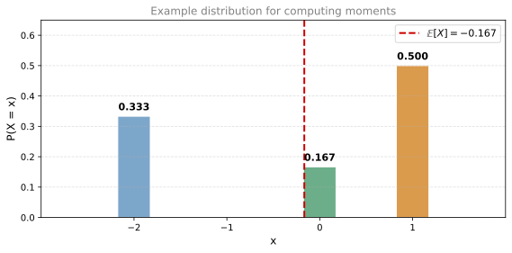
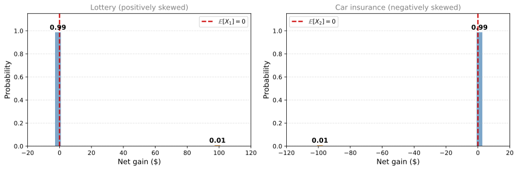
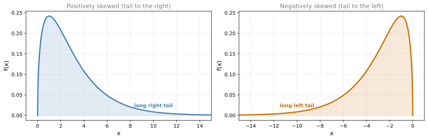
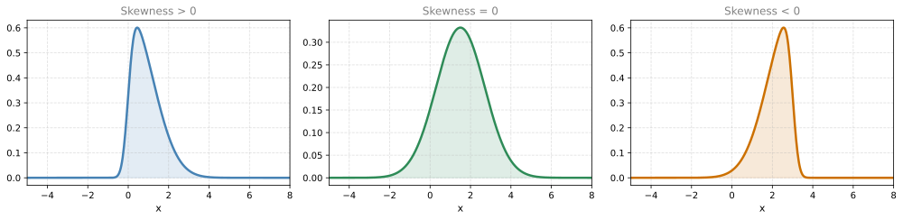
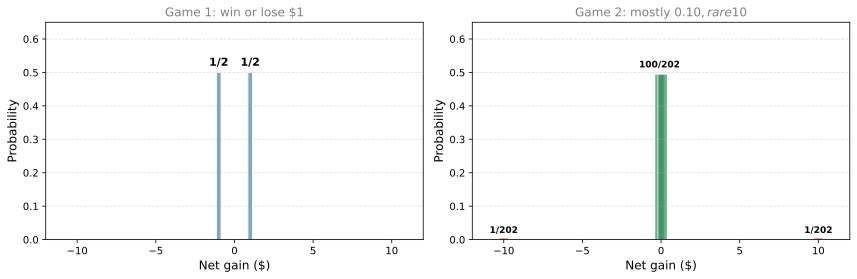
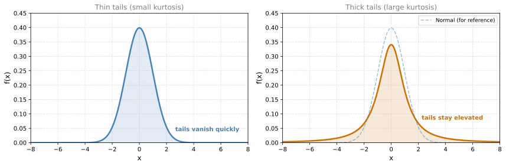

Skewness and Kurtosis
probability
The expected value and the variance (or standard deviation) paint a good picture of a distribution. However, there are subtleties that they do not…
The expected value and the variance (or standard deviation) paint a good picture of a distribution. However, there are subtleties that they do not capture. Two of these are called skewness and kurtosis. Before getting into those measures, we first need to formalize something you have already seen: moments.
Moments of a Distribution
You already know the expected value \(\mathbb{E}[X]\) and you know \(\mathbb{E}[X^2]\) (which is related to variance). These are the first two members of a family called the moments of a distribution.
Concrete Example
Suppose you have a random variable that can take:
- the value \(-2\) with probability \(\frac{1}{3}\)
- the value \(0\) with probability \(\frac{1}{6}\)
- the value \(1\) with probability \(\frac{1}{2}\)
The first moment is the expectation:
\[ \mathbb{E}[X] = \frac{1}{3}(-2) + \frac{1}{6}(0) + \frac{1}{2}(1) = -\frac{2}{3} + 0 + \frac{1}{2} = -\frac{1}{6} \]
The second moment is the expectation of \(X^2\):
\[ \mathbb{E}[X^2] = \frac{1}{3}(-2)^2 + \frac{1}{6}(0)^2 + \frac{1}{2}(1)^2 = \frac{4}{3} + 0 + \frac{1}{2} = \frac{11}{6} \]
Notice that the second moment is related to the variance, but it is not exactly the variance. You have to center (subtract the mean squared) to get variance: \(\text{Var}(X) = \mathbb{E}[X^2] - (\mathbb{E}[X])^2\).
The third moment is \(\mathbb{E}[X^3]\):
\[ \mathbb{E}[X^3] = \frac{1}{3}(-2)^3 + \frac{1}{6}(0)^3 + \frac{1}{2}(1)^3 = \frac{1}{3}(-8) + 0 + \frac{1}{2}(1) = -\frac{8}{3} + \frac{1}{2} = -\frac{13}{6} \]
And so on for higher moments.
General Definition
If a random variable \(X\) can take values \(x_1, x_2, \ldots, x_n\) with probabilities \(p_1, p_2, \ldots, p_n\), then the \(k\)-th moment is:
\[ \mathbb{E}[X^k] = \sum_{i=1}^{n} p_i \, x_i^k \]
Here is the pattern:
| Moment | Formula | Connection |
|---|---|---|
| 1st | \(\mathbb{E}[X] = \sum p_i \, x_i\) | Expected value (mean) |
| 2nd | \(\mathbb{E}[X^2] = \sum p_i \, x_i^2\) | Related to variance |
| 3rd | \(\mathbb{E}[X^3] = \sum p_i \, x_i^3\) | Related to skewness |
| 4th | \(\mathbb{E}[X^4] = \sum p_i \, x_i^4\) | Related to kurtosis |
| \(k\)-th | \(\mathbb{E}[X^k] = \sum p_i \, x_i^k\) | General moment |
Each higher moment captures a different aspect of the distribution:
- The first moment tells you where the distribution is centered.
- The second moment (after centering) tells you how spread out it is.
- The third moment (after centering and normalizing) tells you about asymmetry (skewness).
- The fourth moment (after centering and normalizing) tells you about tail heaviness (kurtosis).
Why Moments Matter
You might wonder: why bother going beyond the mean and variance? The reason is that different distributions can share the same mean and variance but look very different. The third moment will reveal whether a distribution leans to one side (skewness), and the fourth moment will reveal whether it has heavy tails (kurtosis). These are the topics covered next.
Review Questions
1. What is the first moment of a distribution?
TipAnswer
The first moment is the expected value: \(\mathbb{E}[X] = \sum p_i \, x_i\). It tells you where the distribution is centered.
1. If \(X\) takes values 1, 2, and 3 each with probability \(\frac{1}{3}\), what is the second moment \(\mathbb{E}[X^2]\)?
TipAnswer
\(\mathbb{E}[X^2] = \frac{1}{3}(1)^2 + \frac{1}{3}(2)^2 + \frac{1}{3}(3)^2 = \frac{1}{3}(1 + 4 + 9) = \frac{14}{3} \approx 4.67\).
1. Is the second moment the same as the variance?
TipAnswer
No. The second moment is \(\mathbb{E}[X^2]\), while the variance is \(\mathbb{E}[X^2] - (\mathbb{E}[X])^2\). You have to subtract the square of the mean to get the variance. The second moment and the variance are related but not identical.
1. What aspect of a distribution does the third moment capture (after centering and normalizing)?
TipAnswer
The third moment (after centering and normalizing) captures skewness, which measures how asymmetric a distribution is. A distribution that leans left or right will have a non-zero third centered moment.
Skewness
Now you will see a concrete example of why the first and second moments are sometimes not enough to describe a distribution.
Lottery vs. Car Insurance
Consider two scenarios:
Scenario 1 (Lottery): You buy a lottery ticket for $1. The jackpot is $100, and you have a 1% chance of winning. Your net gain \(X_1\) is:
- Win: \(+99\) (you paid $1 and received $100) with probability 0.01
- Lose: \(-1\) (you paid $1 and got nothing) with probability 0.99
Scenario 2 (Car Insurance): You own a car insurance company with one client. The client pays $1 for insurance. If they crash (1% chance), you must pay $100 for repairs. Your net gain \(X_2\) is:
- No crash: \(+1\) (the premium) with probability 0.99
- Crash: \(-99\) (you received $1 but paid $100) with probability 0.01
These two games are exact mirror images of each other. In the lottery, you have a small chance of a large gain. In the insurance business, you have a small chance of a large loss.

These two distributions are obviously very different. Can the expected value or variance tell them apart?
Expected Value Cannot Distinguish Them
\[ \mathbb{E}[X_1] = (-1)(0.99) + (99)(0.01) = -0.99 + 0.99 = 0 \]
\[ \mathbb{E}[X_2] = (-99)(0.01) + (1)(0.99) = -0.99 + 0.99 = 0 \]
Both games have expected value 0. On average, you break even in both. The first moment does not help.
Variance Cannot Distinguish Them Either
Since both distributions are already centered at 0, the variance equals the second moment:
\[ \text{Var}(X_1) = (-1)^2(0.99) + (99)^2(0.01) = 0.99 + 98.01 = 99 \]
\[ \text{Var}(X_2) = (-99)^2(0.01) + (1)^2(0.99) = 98.01 + 0.99 = 99 \]
Same variance. This makes sense: reflected distributions have the same spread. The second moment does not help either.
Third Moment Tells Them Apart
Since these distributions have the same first moment and the same second moment, try the third:
\[ \mathbb{E}[X_1^3] = (-1)^3(0.99) + (99)^3(0.01) = -0.99 + 9{,}702.99 = 9{,}702 \]
\[ \mathbb{E}[X_2^3] = (-99)^3(0.01) + (1)^3(0.99) = -9{,}702.99 + 0.99 = -9{,}702 \]
The third moments are large and have opposite signs. Why does cubing work? Because cubing preserves the sign of a number. In the lottery, the large positive value \((99)\) dominates when cubed, pulling the third moment positive. In the insurance game, the large negative value \((-99)\) dominates, pulling the third moment negative.
In other words, the cube detects whether the extreme values are to the right (positive third moment) or to the left (negative third moment).
Positive and Negative Skewness (Continuous Distributions)
The same idea applies to continuous distributions:

- A positively skewed distribution has more values stretching far to the right than to the left (a long right tail). Those extreme values far to the right contribute large positive cubes, so \(\mathbb{E}[X^3]\) is large and positive.
- A negatively skewed distribution has more values stretching far to the left than to the right (a long left tail). Those extreme values far to the left contribute large negative cubes, so \(\mathbb{E}[X^3]\) is large and negative.
Definition of Skewness
The raw third moment \(\mathbb{E}[X^3]\) depends on the scale and location of the distribution. To get a pure measure of asymmetry, we first standardize the variable and then take the third moment:
\[ \text{Skewness} = \mathbb{E}\left[\left(\frac{X - \mu}{\sigma}\right)^3\right] \]
This is a dimensionless number (no units) that tells you the direction and degree of asymmetry:
| Skewness | Meaning |
|---|---|
| \(> 0\) | Positively skewed (long right tail) |
| \(= 0\) | Symmetric (no skew) |
| \(< 0\) | Negatively skewed (long left tail) |

The moral: when the first and second moments do not help you distinguish between distributions, the third moment (skewness) can.
Review Questions
1. Two distributions have the same mean and the same variance. Can they still look different?
TipAnswer
Yes. The lottery and car insurance examples both have mean 0 and variance 99, but one is positively skewed (large gain is rare) and the other is negatively skewed (large loss is rare). Skewness captures this difference.
1. Why does cubing (rather than squaring) detect asymmetry?
TipAnswer
Squaring makes all values positive, so it cannot distinguish large values to the right from large values to the left. Cubing preserves the sign: large positive values produce large positive cubes, and large negative values produce large negative cubes. This is what reveals the direction of the tail.
1. A distribution has skewness of \(-2.1\). What does this tell you about its shape?
TipAnswer
It is negatively skewed, meaning it has a long tail stretching to the left. Most of the probability mass is concentrated to the right, but there are some extreme values far to the left pulling the third moment negative.
1. Why do we standardize (subtract \(\mu\), divide by \(\sigma\)) before computing skewness?
TipAnswer
Without standardizing, the third moment depends on the scale and location of the distribution. A distribution measured in centimeters would have a different third moment than the same distribution measured in meters. Standardizing removes the effect of units and location, giving a pure dimensionless measure of asymmetry.
1. True or False: If the third moment \(\mathbb{E}[X^3]\) of a distribution has a large positive value, the distribution is skewed right, with the tail extending towards higher values on the right side.
TipAnswer
True. A large positive third moment means that extreme values far to the right dominate when cubed. This indicates a long right tail, which is positive (right) skewness.
Kurtosis
You have seen how the expected value (first moment), variance (second moment), and skewness (third moment) each capture a different property of a distribution. But there is one more important property that none of these three can detect: how heavy the tails are.
Coin Flip vs. Rare Extremes
Consider two new games:
Game 1 (Coin flip): With probability \(\frac{1}{2}\) you win $1, with probability \(\frac{1}{2}\) you lose $1.
Game 2 (Mostly safe, rare extremes): With probability \(\frac{100}{202}\) you win $0.10, with probability \(\frac{100}{202}\) you lose $0.10, with probability \(\frac{1}{202}\) you win $10, and with probability \(\frac{1}{202}\) you lose $10.
Game 2 seems more conservative most of the time (only $0.10 at stake), but there is a small chance of a $10 swing. Which game is “riskier”?

First Three Moments Are Identical
Both distributions are symmetric and centered at 0, so:
- Expected value: \(\mathbb{E}[X_1] = 0\) and \(\mathbb{E}[X_2] = 0\). (Both are symmetric around 0.)
- Skewness: Both are 0. (Symmetric distributions always have zero skewness.)
What about the variance?
\[ \mathbb{E}[X_1^2] = \frac{1}{2}(-1)^2 + \frac{1}{2}(1)^2 = 1 \]
\[ \mathbb{E}[X_2^2] = \frac{100}{202}(-0.1)^2 + \frac{100}{202}(0.1)^2 + \frac{1}{202}(-10)^2 + \frac{1}{202}(10)^2 \]
\[ = \frac{100}{202}(0.01) + \frac{100}{202}(0.01) + \frac{1}{202}(100) + \frac{1}{202}(100) = \frac{2 + 200}{202} = \frac{202}{202} = 1 \]
Both have variance 1 and standard deviation 1. The first moment, second moment, and third moment are all the same for both games. Yet these games feel very different.
Fourth Moment Tells Them Apart
The key difference is that Game 2 has values far from the center (\(\pm 10\)), even though those values are rare. The fourth moment captures this:
\[ \mathbb{E}[X_1^4] = \frac{1}{2}(-1)^4 + \frac{1}{2}(1)^4 = 1 \]
\[ \mathbb{E}[X_2^4] = \frac{100}{202}(0.1)^4 + \frac{100}{202}(0.1)^4 + \frac{1}{202}(10)^4 + \frac{1}{202}(10)^4 \]
\[ = \frac{100}{202}(0.0001) + \frac{100}{202}(0.0001) + \frac{1}{202}(10{,}000) + \frac{1}{202}(10{,}000) \approx 99.01 \]
The fourth moment of Game 2 is nearly 100 times larger than Game 1. Why? Because \(10^4 = 10{,}000\), and raising to the fourth power massively amplifies values that are far from zero. Even though $10 outcomes are rare (\(\frac{1}{202}\)), their contribution to the fourth moment is enormous.
Definition of Kurtosis
Just like with skewness, we standardize before measuring:
\[ \text{Kurtosis} = \mathbb{E}\left[\left(\frac{X - \mu}{\sigma}\right)^4\right] \]
Kurtosis measures the heaviness of the tails of a distribution:
| Tails | Kurtosis | Interpretation |
|---|---|---|
| Thin tails | Small kurtosis | Values cluster near the center, extreme outliers are very rare |
| Thick tails | Large kurtosis | Extreme values far from the center occur more often than you would expect |

The important insight is that two distributions can have the same variance (same overall spread) but very different tail behavior. A distribution might be narrow in the middle but have occasional extreme outliers. Variance alone cannot pick this up, but kurtosis can.
Summary
You now have four tools for describing distributions:
| Measure | Moment | What it captures |
|---|---|---|
| Expected value | 1st | Center (location) |
| Variance | 2nd | Spread (width) |
| Skewness | 3rd | Asymmetry (lean left or right) |
| Kurtosis | 4th | Tail heaviness (outlier proneness) |
Each higher moment reveals something the previous ones cannot. With these four tools, you can say a great deal about any probability distribution.
Review Questions
1. Game 1 pays \(\pm 1\) with equal probability. Game 2 pays \(\pm 0.10\) most of the time but \(\pm 10\) rarely. Both have the same mean, variance, and skewness. What distinguishes them?
TipAnswer
Kurtosis (the fourth moment). Game 2 has a much larger fourth moment because values far from zero (\(\pm 10\)) get raised to the fourth power, producing \(10{,}000\). Even though these extreme outcomes are rare, their contribution to the fourth moment is enormous. Game 2 has heavier tails.
1. Why does raising to the fourth power (rather than the second) detect heavy tails?
TipAnswer
Raising to the fourth power amplifies large values much more aggressively than squaring. A value of 10 contributes \(10^2 = 100\) to the second moment but \(10^4 = 10{,}000\) to the fourth moment. So rare extreme values that barely affect the variance can dominate the fourth moment. This makes kurtosis a more sensitive detector of tail heaviness.
1. A distribution has thin tails (values rarely stray far from the center). Would you expect its kurtosis to be large or small?
TipAnswer
Small. Thin tails mean there are few extreme values, so there is little contribution from large numbers raised to the fourth power. The fourth moment stays small.
1. Can two distributions have the same mean, variance, and skewness but different shapes?
TipAnswer
Yes. The coin flip game and the rare-extremes game have identical mean (0), variance (1), and skewness (0), yet they look very different. The fourth moment (kurtosis) is what finally distinguishes them: 1 for Game 1 versus approximately 99 for Game 2.
1. Consider two games. Game A has a probability of \(\frac{1}{3}\) to win $2 and a probability of \(\frac{2}{3}\) to lose $1. Game B has a probability of \(\frac{1}{2}\) to win $0.50, a probability of \(\frac{1}{4}\) to lose $0.50, a probability of \(\frac{1}{8}\) to win $5, and a probability of \(\frac{1}{8}\) to lose $2. Which of the following is true?
- Game B’s kurtosis is smaller than Game A’s kurtosis
- Both Game A and Game B have the same kurtosis
- Game A’s kurtosis is smaller than Game B’s kurtosis
TipAnswer
c. Game A’s kurtosis is smaller than Game B’s kurtosis. Game B has extreme values ($5 and \(-\$2\)) that occur with small probabilities. When raised to the fourth power, these extreme values contribute much more to the fourth moment than Game A’s moderate values ($2 and \(-\$1\)). Game B has heavier tails, so its kurtosis is larger.